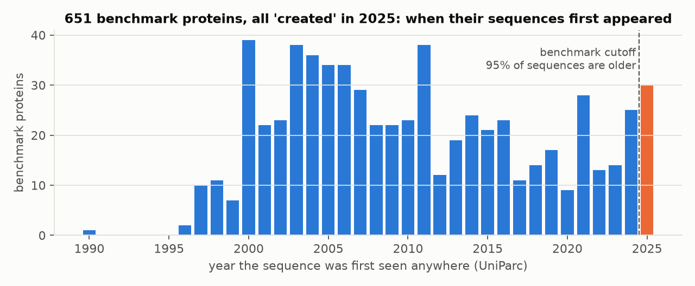
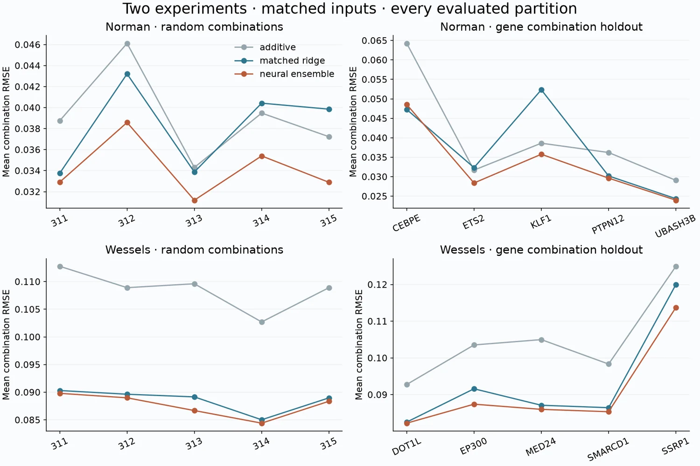

Benchmark provenance
Protein Cutoff Audit
In an audit of a published protein benchmark, 621 of 651 sequences had already appeared before the stated cutoff. I traced the gap between curation dates and earlier public records.

Computational biology · Bay Area
I study what biological measurements and benchmarks can tell us, and where their conclusions break down.
Benchmark provenance
In an audit of a published protein benchmark, 621 of 651 sequences had already appeared before the stated cutoff. I traced the gap between curation dates and earlier public records.

Single-cell modeling
I compared additive, ridge, and neural models on two measured experiments. The neural model’s advantage narrowed on harder holdouts.

Spatial microscopy
I audited a published MERFISH panel to see whether its blank barcodes cover the readout pairs used by target barcodes.
933 / 940
target barcodes contain a readout pair absent from all blanks